I tuoi soldi,finalmente a fuoco.
Paghi con Apple Pay in negozio e la spesa è già lì. Tutto il resto, in due tocchi. E ogni mese si legge come una frase.
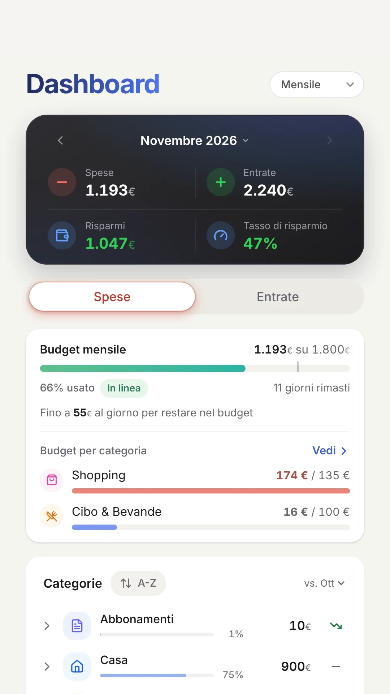
Paghi con Apple Pay.È già lì.
- La imposti una voltaUn’automazione in Comandi. L’app ti guida passo per passo, in un paio di minuti.
- Paghi in negozioCon Apple Pay sull’iPhone, come sempre.
- È già lìUna notifica con importo e negozio. Dalla seconda volta anche categoria e conto, e dove l’hai già salvata si salva da sola, con Annulla.
Funziona con Apple Pay nei negozi. I pagamenti online e nelle app li aggiungi in due tocchi.
Guarda come si imposta, 1 minuto →La guida, passo per passo →
Tutto il resto?Due tocchi.
Importo, categoria, fatto. Le spese ricorrenti come l’affitto compaiono da sole, il giorno giusto. E se vuoi, un promemoria leggero la sera, solo nei giorni in cui non hai ancora segnato niente.
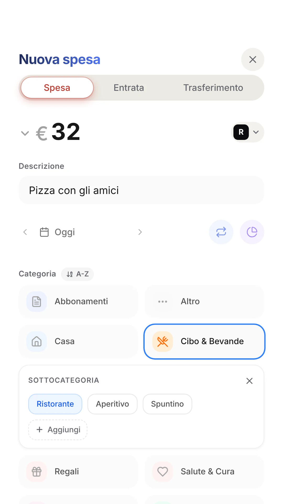
Ogni scontrino, con la sua spesa.Pronti per il 730.
Fotografa lo scontrino quando registri un acquisto - la farmacia, il dentista, il computer nuovo - o allega la fattura, e resta con lei, nel tuo account, su ogni dispositivo. A fine anno esporti quelli che ti servono in un PDF con il totale: per il 730, l’assicurazione sanitaria, una nota spese.
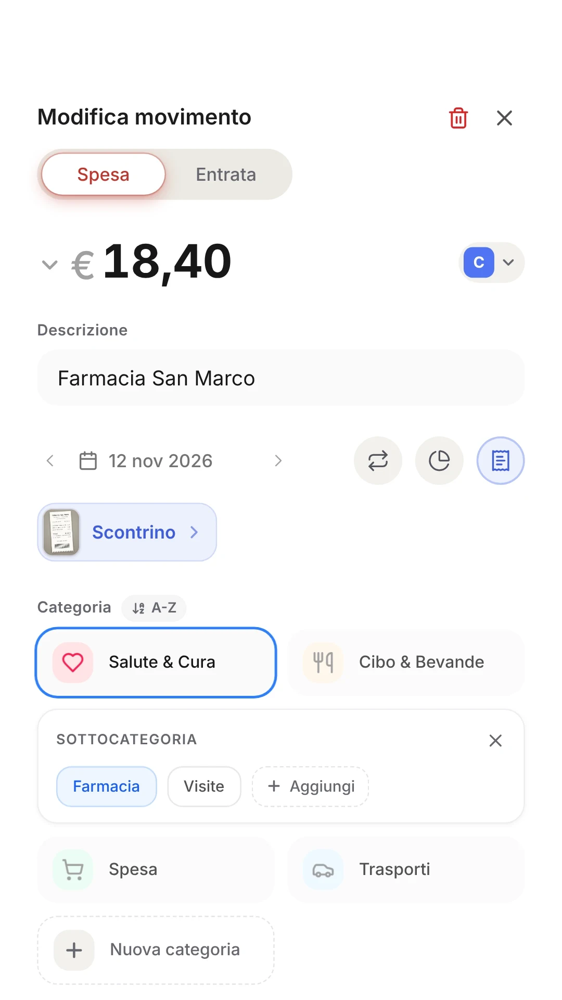
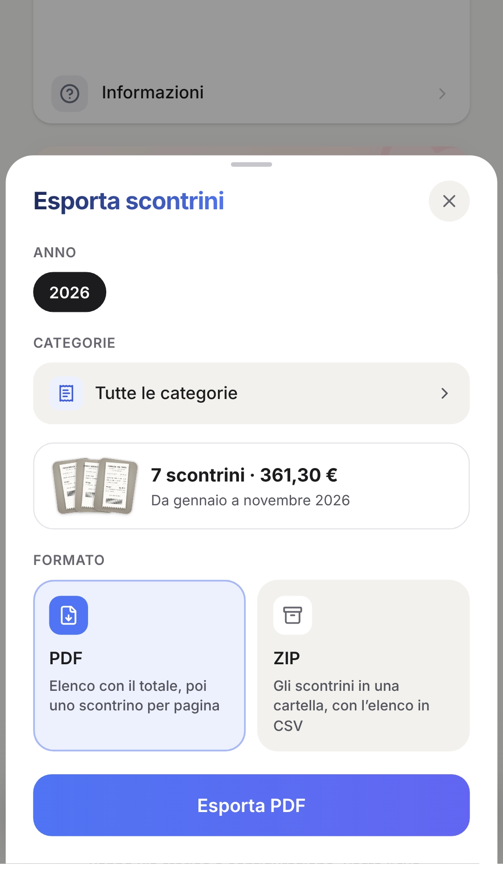
Un limite dove lo vuoi tu.Solo lì.
Dai un budget mensile alle categorie che vuoi tenere d’occhio: lo shopping, le cene fuori, il weekend. Nella Dashboard, sotto il budget del mese, ognuna mostra come sta andando: arancione quando si avvicina, rosso quando lo raggiunge - e l’app te lo dice, una volta sola.
In Impostazioni › Budget, con quanto spendi di solito come suggerimento.
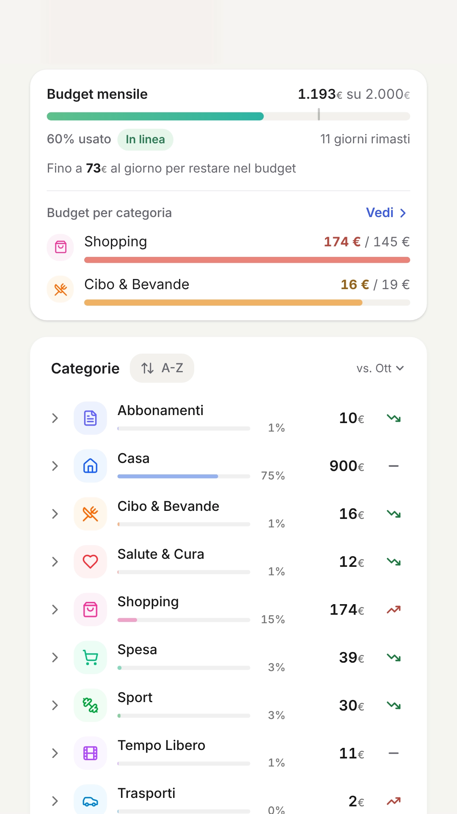
Mese dopo mese.Vedi cosa cambia.
I mesi uno accanto all’altro, il migliore e il peggiore segnalati, quest’anno contro l’anno scorso. E ogni mese concluso riceve una frase scritta dai tuoi numeri: cosa è cambiato, di quanto, rispetto al solito.
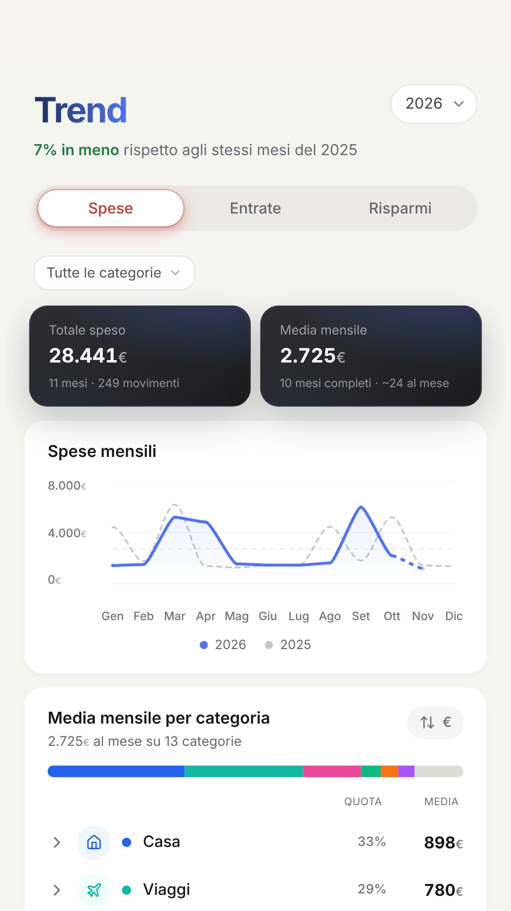
Ogni euro,seguito fino in fondo.
Dallo stipendio a ogni categoria, in un’immagine sola: quanto è entrato, dove è andato e quanto è rimasto. Un mese alla volta o tutto l’anno fin qui, e tocchi una categoria per aprirla.
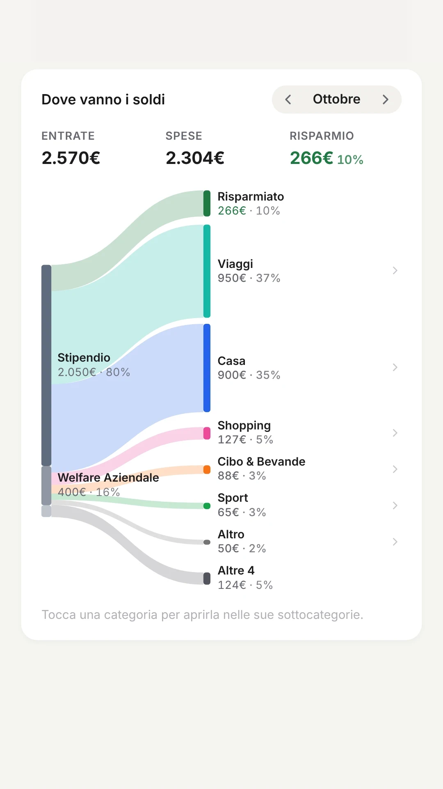
Pagata una volta.Contata mese per mese.
Un’assicurazione da 1.200€ non rovina un mese solo: spalmala su 3, 6 o 12 mesi e il budget di ogni mese ne conta la sua parte. Preferisci vederla come uscita il giorno in cui l’hai pagata? Un interruttore nel profilo.
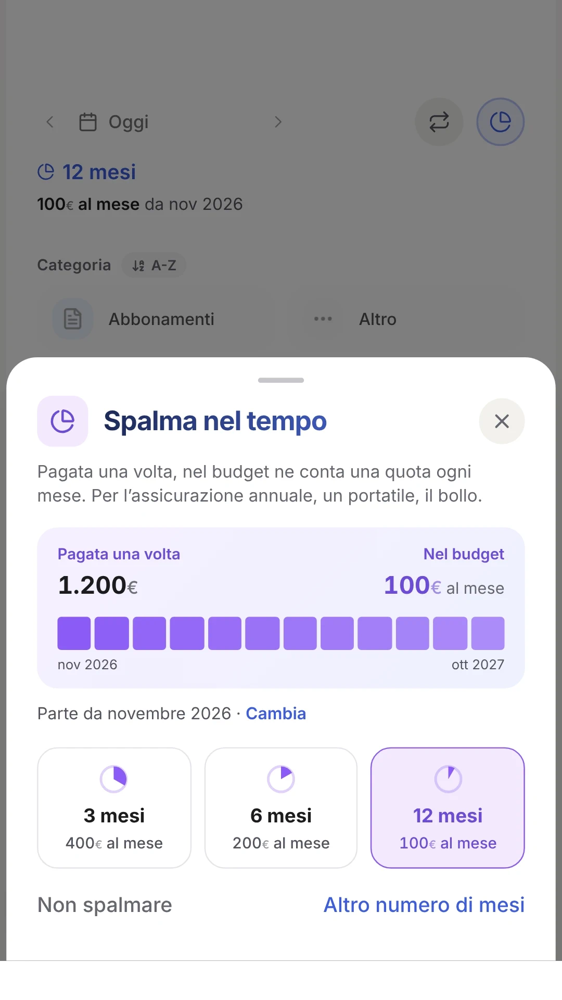
Ogni viaggio.Quanto è costato davvero.
Dai un nome al viaggio e TracklyLab fa i conti: hotel, voli, cibo, attività. Spendi in 155 valute, ognuna convertita al cambio del giorno e fissata lì: un viaggio resta quanto ti è costato davvero.
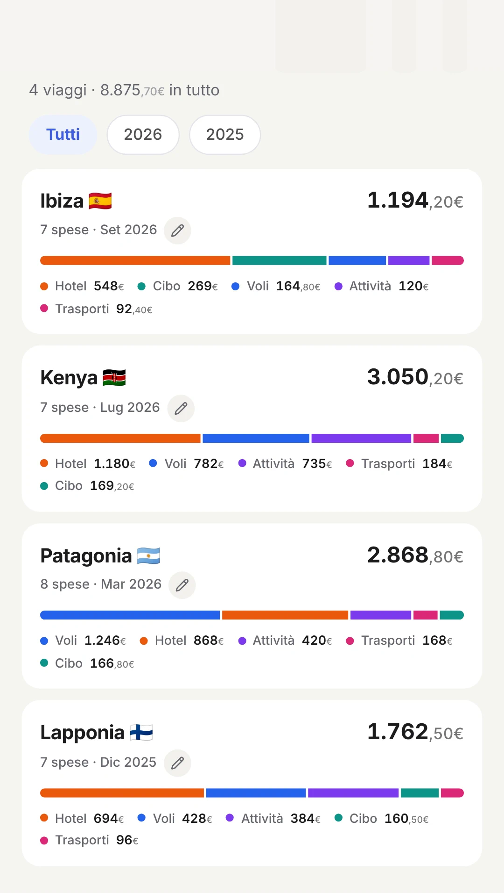
Il tuo mese,sempre sotto gli occhi.
Sulla schermata di blocco, quanto hai speso e i giorni che mancano. Sulla Home, quanto puoi ancora spendere al giorno. E un + per aggiungere una spesa senza nemmeno aprire l’app.
Nell’app per iPhone.
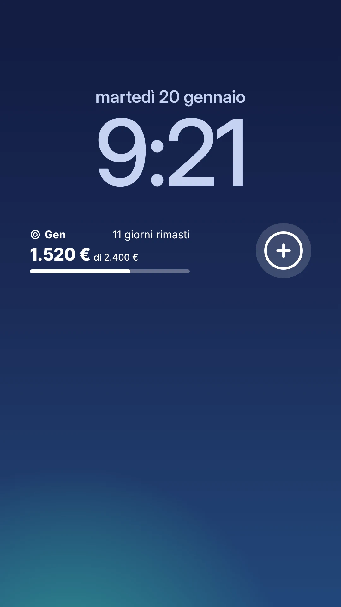
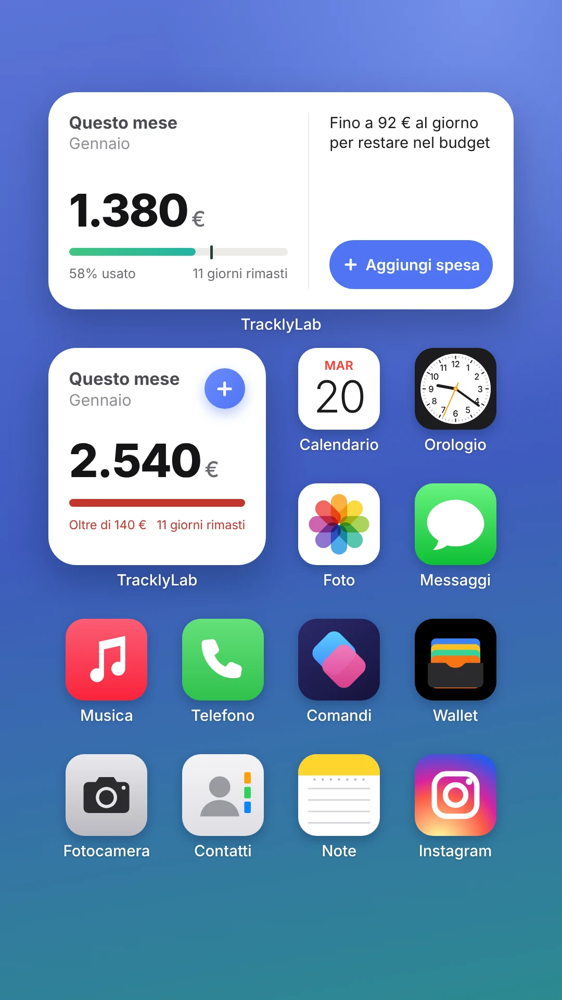
Tutto quello che serve al mese.Niente di più.
Un anno di estratti conto, in un minuto
Un estratto conto, un foglio Excel, un PDF o uno screenshot: viene letto per te, abbinato alle tue categorie, e niente entra finché non l’hai controllato. Anche gli export di Splitwise e Tricount.
Spese condivise, in coppia
Segna una spesa come condivisa e compare su entrambi i telefoni, divisa come volete. Il saldo si tiene da solo, e ti dice a chi tocca offrire la prossima cena.
Un budget che ti conosce
Una barra del budget che ti confronta con il tuo mese abituale, non con un obiettivo a caso, e a metà mese ti dice se sei in linea.
Conti e saldi
Contanti, carte e conti correnti: quanto hai adesso, su quale conto e come cambia nel tempo, con i trasferimenti tra conti e i saldi da verificare con la banca.
Trovi tutto
Ogni movimento, cercabile e filtrabile per data, categoria e conto. Esporti tutto in CSV, quando vuoi.
Fatta con cura
In italiano e inglese, su ogni iPhone, anche il più piccolo. E in qualsiasi browser, su ogni telefono o computer.
Risparmi per gruppo
Metti insieme entrate e spese di un tema - l’affitto che incassi, i costi della casa - e vedi quanto rende davvero, mese per mese.
Il mese, riassunto
Quando un mese finisce, il suo riepilogo ti aspetta: rispetto al tuo solito, cosa ha pesato di più e come sarebbe andato senza la spesa più grande.
Ricorrenti, da sole
Affitto, abbonamenti, stipendio: imposti una volta ciò che si ripete e viene aggiunto ogni settimana, mese o anno, e vedi in anticipo cosa sta per arrivare.
Hai pagato per tutti?
Segna solo la tua quota, oppure il totale e poi i rimborsi che arrivano: chi ti deve cosa, senza conti a mano.
Chiara di giorno, scura la sera
Chiara, scura o come il tuo iPhone: ogni schermata è pensata per entrambe.
Una guida dentro l’app
Impostazioni › Scopri TracklyLab: ogni funzione con un’immagine, poche righe e un pulsante per provarla subito - e in cima, le novità di ogni versione.
I tuoi soldi sono affari tuoi.
Accedi con Apple, Google o la tua email e le tue spese sono salvate e sincronizzate su tutti i tuoi dispositivi: restano tue, mai vendute, mai usate per la pubblicità. E puoi cancellare tutto, quando vuoi, direttamente dall’app. I dettagli sono nella Privacy Policy.
Da sapere,prima di iniziare.
Registra anche i pagamenti Apple Pay online?
Non da solo: iOS fa partire l’automazione solo quando paghi in negozio. I pagamenti online e nelle app li aggiungi in due tocchi.
Cosa serve per l’automazione di Apple Pay?
Un iPhone con iOS 17 o successivo e una carta nel Wallet. Imposti una volta un’automazione in Comandi: l’app ti guida passo per passo.
Devo collegare la banca?
No, mai. Le spese arrivano da Apple Pay, in due tocchi o da un estratto conto che scegli tu di importare. TracklyLab non chiede mai l’accesso alla banca.
Perché accedere con un account?
Accedi con Apple, Google o la tua email e le tue spese sono salvate e sincronizzate su iPhone, computer e qualsiasi browser, e tornano con te su un telefono nuovo.
I miei dati vengono venduti o usati per la pubblicità?
No. Le tue spese sono tue: niente pubblicità, niente venduto. Puoi cancellare l’account e tutto ciò che contiene direttamente dall’app, quando vuoi.
Posso usarla senza iPhone?
Sì: TracklyLab funziona in qualsiasi browser, sui telefoni Android e sui computer. L’app per Android arriva nel 2027. I widget e l’automazione di Apple Pay sono solo su iPhone.
Posso portare dentro quello che segnavo prima?
Sì: un estratto conto, un foglio Excel, un PDF o uno screenshot vengono letti per te e abbinati alle tue categorie, e niente entra finché non l’hai controllato. Anche gli export di Splitwise e Tricount.
Posso dividere le spese con il partner o un coinquilino?
Sì. Vi collegate con un codice: le spese condivise compaiono su entrambi i telefoni, divise come volete, nel tuo budget conta solo la tua metà e il saldo si tiene da solo.
Funziona anche per i viaggi all’estero?
Sì. Spendi in 155 valute: ogni spesa è convertita al cambio del giorno e fissata lì, così un viaggio resta quanto ti è costato davvero.
Ho pagato la cena per tutti: come la segno?
Solo la tua quota, oppure il totale e poi i rimborsi che arrivano: lo scegli una volta, in Profilo › Spese per altri.
E una spesa grossa annuale?
Spalmala su 3, 6 o 12 mesi e il budget di ogni mese ne conta la sua parte: l’assicurazione, un computer nuovo, il bollo.
Posso tenere gli scontrini, per esempio per il 730?
Sì, con un account: fotografa lo scontrino o allega la fattura quando registri la spesa, e resta con lei. A fine anno esporti gli scontrini dell’anno - tutti, o solo alcune categorie come Salute - in un PDF con il totale, o in uno ZIP con l’elenco in CSV.
Posso dare un budget a una sola categoria?
Sì: in Impostazioni › Budget dai un budget mensile alle categorie che scegli. La Dashboard mostra quelle vicine al limite e ti avvisa una volta quando ne raggiungi uno.
TracklyLabLa lente sulle tue spese.
Scarica TracklyLabSu iPhone o in qualsiasi browser · Senza collegare la banca